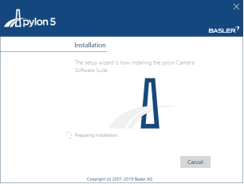
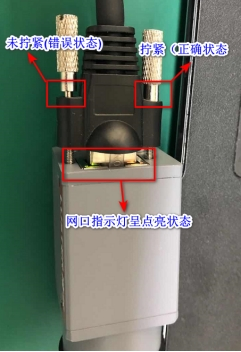

点击任务栏右下角处小地球标志；

在右侧会弹出网络设置点击“网络和Internet设置”；

在设置界面，先点击以太网，在点击更改适配器选项；
找到相机连接的网卡，双击或者右键属性打开；
双击红框Internet协议版本4（TCP/IPv4）进入IP设置界面；
设置静态IP，只需要按照规定设置IP地址和子网掩码；

双击.exe安装包，弹出安装页面
点击Next跳转安装路径页面，默认路径为C盘
继续点击Next跳转到确认安装页面
点击Install，跳转安装进度页面
安装完成，点击Fnish关闭
注意
需要安装的版本为Basler_pylon_5.2.0.13457.exe
双击.exe安装包，弹出Pylon安装界面，勾选I agree to the pylon，点击Next
刷新到权限选择页面，默认选择用户（也可选工程师）
点击Next，刷新到驱动选择页面（USB为U口相机，GigE为网口相机，FireWire为AM接口）
选择已连接对应的相机驱动，点击Next
刷新到安装路径页面，默认为C盘
点击Next跳转安装页面
点击Install，跳转安装进度页面

安装完成页面，点击Close关闭窗口
请先将相机连接到工控机上，网线一端连接相机，另一端连接工控机网口，如果工控机没有POE模块，需要电源模块给相机独立供电。要求网线是超五类的高柔线。连接后，确认相机一端的网线是安装到位的，紧固螺钉一定要是锁紧状态,若相机上有指示灯，则指示灯呈蓝色/绿色闪烁状态；工控机端网口上插入的网线卡扣确认是卡紧状态，网口指示灯呈点亮状态。

点击任务栏右下角处小地球标志；
在右侧会弹出网络设置点击“网络和Internet设置”；
在设置界面，先点击以太网，在点击更改适配器选项；
找到相机连接的网卡，双击或者右键属性打开；
双击红框Internet协议版本4（TCP/IPv4）进入IP设置界面；
设置静态IP，只需要按照规定设置IP地址和子网掩码；
先打开任务栏右下角电脑标志，然后点击弹出的“打开网络和共享中心”；

在弹出的网络和共享中心页面点击左侧“更改适配器设置”；

在弹出的网络连接窗口点击需要设置的网卡；
双击图中红框内的“Internet 协议版本4（TCP/IPv4）”
选中图中“使用下面的IP地址（S）”，然后设置红框内的IP地址和子网掩码，设置好之后点击“确定”设置完成；

若现场使用相机为SDK类型相机（Basler），保证对应相机的过滤驱动为勾选状态如下图中的左侧图部分，若相机为GigEVision相机（比如AVT、Conge、映美精等）过滤驱动如下图的右侧截图。
点击配置,然后点击红框内的高级，将接收缓冲区(Receive Buffers)设置为最大值,一般为2048;巨帧(Jumbo Packet)设置为9k或者最大值；中断裁决率（Interrupt Moderation Rate）设置为极值:

点击电源管理，在里面取消勾选“允许计算机关闭此设备以节约电源（A）”
查看本地网口信息是否包含过滤驱动名称
第二种方法打开VisionKit，导航区工具中选择驱动配置工具
驱动配置页面中可查看驱动安装状态
查看本地网口信息是否包含过滤驱动名称：
正常状态下网卡处于识别状态；异常情况下，网卡识别不到相机，如图所示：
网卡识别不到或者网卡呈灰色禁用状态下，需要查看”我的电脑—-管理—-设备管理器“，网卡驱动是否含有黄色感叹号，若有则需要重新安装网卡驱动；若没有，可以尝试重新禁用再启用该网卡，看是否能恢复到设备可识别状态。进行上述操作后，网卡还不能识别到设备，则需要更换工控机。
经过实验室测试，Realtek网卡性能不足，容易产生丢包情况，需要更换为Intel网卡。此外，若网卡的驱动版本过于陈旧，也会给相机采集带来不良影响，需要利用驱动精灵等软件进行驱动的更新，建议驱动程序使用2015年之后的版本。网卡类型以及驱动信息，查询方式如图2.2_3所示，右键网卡—-属性—-配置—-驱动程序。
帧率：用来表示每秒采集多少张图片
曝光：用来增强图像亮度，一定范围内，曝光越大图像整体越亮；曝光过大，会导致帧率降低（建议曝光设置在80ms一下）
增益：用来增强图像亮度，增益不适合过大，会引入噪声。
Gamma：用于图像校正（相机过曝或曝光不足，一般采用默认值）
像素格式：目前软件支持Mono8（黑白），RGB（彩色），Bayer格式（彩色）
采集模式：分为触发模式和非触发模式两种。触发模式中，又分为软触发和硬触发。其中，软触发指相机在接收到相关指令/命令后开始采图，VA软件中采集工具在执行时会发出触发指令；硬触发指相机在接收到高低电平信号后开始采图，该电平信号不由软件控制，一般由PLC给出。非触发模式指连续采集模式，VA软件中在前期项目调试成像时多会用到该模式，正式的生产中用的都是触发模式。
SCPD参数设置：
SCPD参数是指帧间包延时。该参数的作用是通过调大该参数，减少单位时间内传输的数据总量，从而降低数据丢包的可能，避免图像出现黑条纹等情况。不同厂商的SCPD参数描述与设置不同。
对于非LBAS相机需要在相机SDK中修改。
针对Cognex相机：打开LusterCamViewer软件
S1：参数下拉框选择Guru；
S2：设置下方参数Transport Layer中Inter-Packet Delay值,具体设置如图所示：
S3: 在Configuration Sets中保存设置，通道选择一致后保存，如图所示：
针对其他GigEVision相机：需要设置SCPD参数，可以联系测试部进行具体型号相机的设置。
注意
对不同品牌的相机最好使用自己的驱动软件或者使用研发部指定的驱动软件去修改IP，否则可能会设置IP失败，在相机重连的时候变成默认IP；
AVT相机IP设置
在桌面上找到Vimba Viewer软件双击打开；
进入到Vimba Vierer 软件后，如果GigE列表中没有相机点击左侧刷新按钮直到刷新出已经连接的相机；
鼠标右键点击需要设置IP的相机，在弹出的菜单中点击“Open CONFIG”进入设置界面；
进入设置界面后，点击GigE展开之后点击Configuration再次展开，点击“IP Configuration Mode”右侧红框，然后在弹出的“IP Configuration Mode”窗口点击下拉框选择“Persistent”，设置完成后点击叉号，然后在点击“IP Configuration Apply”右侧的“COMMAND”，会弹出“IP Configuration Apply”对话框，在对话框中点击“Execute”；
点击GigE展开后点击Persistent展开然后设置IP，点击Persistent IP Address右侧的红框弹出“Persistent IP Address”对话框，在红框内设置IP然后点击叉号；
然后在点击“IP Configuration Apply”右侧的“COMMAND”，会弹出“IP Configuration Apply”对话框，在对话框中点击“Execute”设置完成；
Cognex相机IP设置
参考LBAS的IP设置
映美精相机IP设置：
参考LBAS的IP设置
相机使用过程中，会遇到各种问题，下文对主要的几种情况从现象描述、问题原因、排查及解决措施等方面进行了总结。
Q:
打开VA软件后在相机列表中找不到相机，点击刷新按钮也刷新不出相机？
A:
找不到相机的原因有以下几种：
对应相机的库加载失败
若打开VA软件数据存储目录底下的TraceLog*.txt（时间最新的文件，在LusterCache文件夹下如TraceLog1.txt或TraceLog2.txt），发现GvCamLBase12u.dll加载失败，如图所示，需安装“安装LBAS CAPTURE_NEU_3.1_190909，SDK识别相机，VA不识别相机.zip”补丁（该补丁在文档云硬件共享资料文件夹中）；
对应相机的库被删除
查找相机对应的模块如图所示，看使用的相机对应的模块是否之前被删除过（相机问题规避策略会使用）；


在配置文件中被屏蔽
用记事本打开“CamConfig.gcfg”文件如图所示，在该文件中查看是否该相机已经被屏蔽掉，如果被屏蔽删除“CameraSN”对应的一行保存改配置文件然后重启VA；

Q:
在VA软件的相机管理里可以在相机列表中看到相机或者通过点击刷新按钮刷新出相机，但是不能使用
A:
能找到或者刷新出相机，但是无法连接和使用的原因有以下几种：
硬件列表中没有：
新相机接入，需要把相机、采集卡、连接线、电源线等全套发回研发部进行兼容后使用；
相机占用：
查看是否在LBAS CAPTURE中、其他打开的VA中或者没有退出的进程中占用了相机，如果是被占用关闭先用相机的软件或进行后，在相机管理中点击刷新（重新打开VA软件）会连接上相机。
软件强制退出引起相机资源占用：
重启相机，再次连接即可；
连接线问题：
检查网线是否存在问题，USB3先是否过长等；
Q：
相机采集到的图像发生了异常，主要表现为采集到的图像中出现了黑色条纹、错位、以及图像由当前图和前一张图拼凑而成等情况。丢包图像如图所示：
A:
相机数据在传输过程中因为丢包造成黑条、花屏等问题
排查及解决措施
确认网卡型号以及网口驱动满去需求，具体操作参照1.2章节。
确认网卡参数如1.2章节描述完成相应设置。重点关注巨帧、收发缓存、中断裁决率等参数。
若相机不是LBAS相机，可跳过该步骤。若是LBAS相机，确认相机SDK软件（LBAS CAPTURE）是要求的版本号（注：V5.5和V6.2基线版SDK已同步到最新，但部分现场旧版软件可能存在旧版驱动的情况），确认相机固件是最新的固件。具体设置可参照1.2章节
经过前两步验证后，若相机还有丢包情况产生，需要对SCPD(帧间包延时)参数进行更改（注：更改SCPD参数会降低帧率，导致采集时间加大，具体需要实际现场）。具体设置参照1.3章节
软件中加入丢包重采功能。（V5.5和V6.2基线版已添加该功能，其他版本软件可联系测试部，按需添加）
若现场使用GigEVision协议相机出现丢包，需要安装独立的过滤驱动。
若以上步骤后，相机还会有较严重的连续丢包，会对后续的图像处理产生影响，可以更换相机排除个体原因。
注意
相机丢包问题，因为相关的硬件、软件、系统等影响因素太多，不能保证相机根本上不丢包，目前只能改善丢包的严重程度，消除对视觉图像处理的影响。
Q:
使用相机采集图像的时候获取到的图会出现扭曲、错位
A:
这种情况一般多出现在Rolling相机中，拍摄过程中相机和被拍摄的物体之间存在运动，对于这种问题需要在拍摄前添加延迟，或者通过检查软件和机构等的工作流程消除掉这种拍摄过程中出现的相对运动的情况，对于图像扭曲下面描述了扭曲现象和可能对应的相机类型。
Q:
使用硬触发时，出现多拍图像的问题：
A:
相机在硬触发模式下接收到触发信号后会拍摄图片存到SDK中，当取图的时候实际是直接获取的缓存中的图片，所以在流程中在不必要的情况下机构给了硬触发信号，导致缓存中多了不需要的图片，这时需要
控制好机构的信号给出；
在不需要接收硬触发信号的时候通过相机模式转换工具把相机的触发模式设置为软触发，在需要接收触发信号的时候在设置回硬触发模式；
1、通过独立参数频繁设置相机的曝光、增益、Gamma等会存在一定几率出现设置未生效，这是尽量减少独立曝光的使用，如果一个相机拍照两次可以一个相机使用默认参数一个相机使用独立参数；
2、有的相机是因为固件原因引起，需要升级到最新版本的固件；
3、Rolling相机使用Global模式，采集的图片亮度和非触发模式下连续采集到的图片亮度不一致，这是相机特性决定；
Q:
使用图像采集工具采集图像的时候，会出现采集时间长和采集时间不稳定的情况（偶尔出现采集时间是几秒或者十几秒）
A:
采集时间长一般是频繁写日志，达到磁盘IO的瓶颈使采集卡住，还有就是因为相机设置、网卡配置和网卡性能等，下面详细描述解决办法：
问题排查及解决措施
关闭图像采集工具日志
注意
非Lbas相机的日志不能关闭，在6.3.200的版本上做了修改，在关闭图像采集工具的日志的时候会同时关闭相机记录的日志；
关闭磁盘休眠


关闭防火墙

检查相机设置
SCPD：如果相机有SCPD或者类似的参数，需要在相机对应的驱动软件中设置并保存；
检查网卡设置以及带宽（如果是网口相机）
网卡设置：按照1.2 网卡参数设置>中的方法查看是否正确设置；如果里面还有其他采集驱动的过滤驱动，且我们没有用到，需要把其他采集驱动卸载。
带宽：如果工控机连接多个相机，且连接相机的千兆网卡是1拖2或者1拖4，需要查看网卡的类型，以及插槽的类型，是否是PCIE X4及以上的，如果不是有可能因为带宽不够引起相机丢包而导致采集时间长。
如果USB3相机，需要检查网线长度和是否使用了USB2；
Q:
在相机管理中查看相机的最大帧率达不到相机标称的最大帧率
A:
出现这个问题主要是因为相机设置上曝光参数设置过大、SCPD设置太大，网卡配置、网卡带宽等，下面详细说明每个点的设置：
相机参数设置
打开“VA”软件之后，先点击“设置”在点击“相机”进入相机管理；

进入相机管理中，点击左上相机列表中的相机查看，在右侧相机参数的红框内看帧率是否设置过低，过低的情况下需要把帧率调节到最大；曝光设置会影响帧率，如果曝光设置高，帧率可设置的最大值会降低：
如果在“图像采集工具”中使用了独立参数，在此处设置的曝光值过大（超过100ms）也会影响采集帧率；

若相机中SCPD（或类似的参数）设置的过大，也会降低帧率，造成采集时间过长。关于SCPD参数的修改具体参照1.3章节。
网卡参数设置：
按照1.2 网卡设置中的方法查看“巨帧”、“收发包缓存”等设置是否正确设置；
如果现场使用两个1拖4的网卡来使用6个相机，则每个网卡连接3个相机；
Q:
在正常生产过程中，出现了采集工具执行失败，工具报红的情况，如图所示。
具体的情况可能有
采集失败的工具，只是偶尔采集失败一次，重新运行选中能够执行成功；
采集工具高频次(一天5次以上)的出现执行失败的情况，且采集日志中出现“未知错误”提示,如图所示：

采集工具反复执行失败，相机指示灯呈现红色，如图所示：
A：
有可能相机掉线、相机接触不良、GenICam库问题等
排查及解决措施
出现采集失败的问题，请先确认相机一端的网线和网口端的网线是安装到位的
确认相机驱动SDK以及相机固件已经更新到最新
在生产工程中添加采集失败防呆措施，规避偶尔（几天到几周一次）的采集失败现象。
注意
采集防呆措施目前只在固定版本进行了采集工具内部封装处理，在测试优化完成后添加进V5.5和V6.2两个基线版本。其他旧版本，暂时还需要在工程端进行规避），防呆逻辑如图所示：
若相机丢包频次很高（一天5次以上）且采集日志中能看到“其他错误”提示，需要增加内存条，扩大系统内存。（系统中因为内存交换引起页面错误，导致相机底层发生错误）
Q:
在VA软件使用的时候可能网络环境中接入了不输入我们的相机和扫码枪等，需要把这些设备屏蔽掉
A:
需要屏蔽的相机和扫码枪和我们使用相机使用不同的协议时


通过在配置文件中添加屏蔽SN解决，如下图：用notepad++（或者记事本）打开System文件夹下的“CamConfig.gcfg”文件如图所示，添加CameraSN项，属性写需要屏蔽的SN，每添加一个需要屏蔽的SN添加一条CameraSN；

需要屏蔽的相机和扫码枪和我们使用相机使用相同的协议时